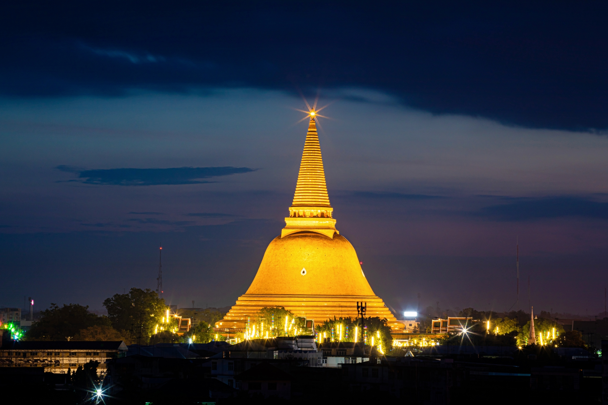
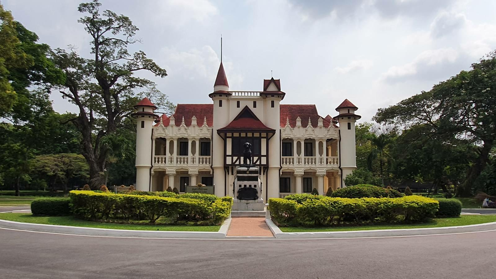
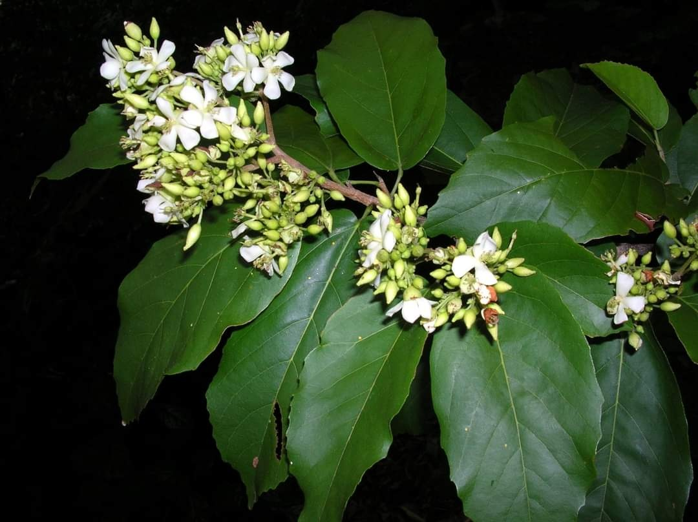
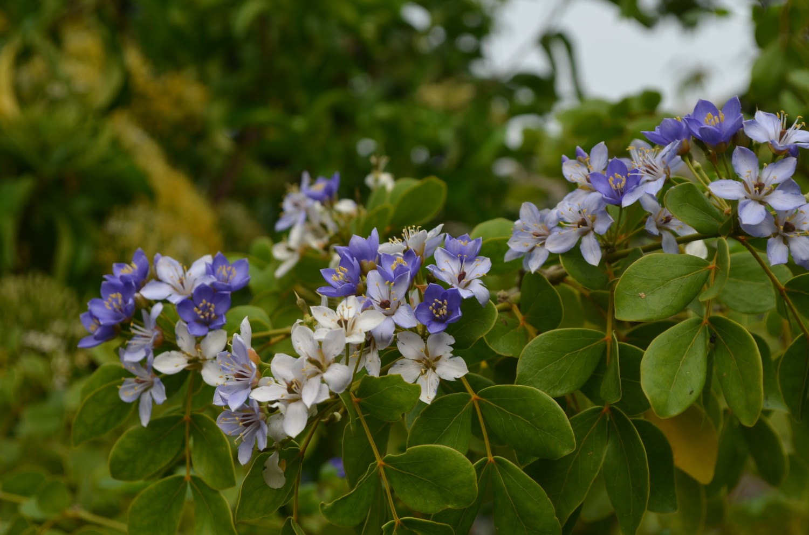

สถานที่สำคัญและแหล่งท่องเที่ยว
นครปฐมเป็นเมืองท่องเที่ยวใกล้กรุงเทพฯ ที่มีความหลากหลาย
- วัดพระปฐมเจดีย์ราชวรมหาวิหาร: ปูชนียสถานคู่บ้านคู่เมือง และเป็นเจดีย์ที่ใหญ่ที่สุดในประเทศไทย

- พระราชวังสนามจันทร์: พระราชวังที่มีสถาปัตยกรรมผสมผสานไทย-ตะวันตกที่งดงาม

- ตลาดน้ำดอนหวาย และ ตลาดน้ำลำพญา: แหล่งรวมอาหารอร่อยและวิถีชีวิตริมน้ำ

- พุทธมณฑล: สวนสาธารณะทางพุทธศาสนาที่สำคัญ

ของดีประจำจังหวัด